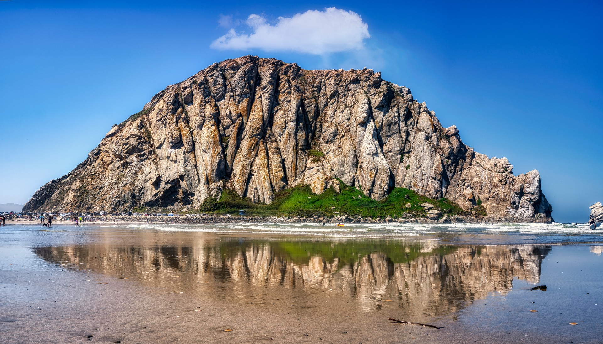

THIS IS
HOME.
Baseball. Campus. Coast. Mountains. A college town on California's Central Coast.
MORE THAN A PLACE TO PLAY BASEBALL.
Cal Poly sits in San Luis Obispo, where a true college-town downtown, the Pacific coast and the hills of the Central Coast all become part of the student-athlete experience.

THE HEART OF SLO
Mission Plaza anchors downtown San Luis Obispo, with shops, cafés, restaurants, community events and the city's year-round Thursday Farmers' Market nearby.
Explore Downtown SLO ↗
THE PACIFIC IS PART OF THE BACKDROP.
From Morro Bay to the beach communities south of San Luis Obispo, the Central Coast puts ocean views, beach days and a distinctly California setting within the larger SLO experience.
BUILT INTO THE HILLS.
Cal Poly's campus sits against the hills surrounding San Luis Obispo, creating an environment where campus life and the outdoors are never far apart.
YOUR BACKYARD GETS BIGGER.
San Luis Obispo is a starting point for exploring the wider Central Coast — coastal towns, open space and communities that give a weekend in SLO a completely different feel from a typical college visit.

PLAY HERE.
LIVE HERE.
Division I baseball at Baggett Stadium, surrounded by the San Luis Obispo and Central Coast experience.
Explore Pro Mustangs →BUILD YOUR SLO WEEKEND.
Future versions can add a recruit-and-family visit guide, interactive map, beaches, hikes, places to eat, travel information and more of the day-to-day SLO experience.